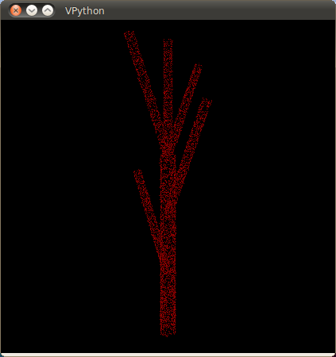

On définit tout d’abord un modèle pseudo-LIDAR simple, basé sur une des grammaires qu’a proposées Sylvain, mais avec seulement deux itérations:
A -> F[+A]F[-A]F[<A][>A][^A]
Faisons ensuite un sampling de la surface de ce modèle avec une densité de 20000 points par unité de surface (paramètre --P_density) et des petits écarts suivant une loi exponentielle de scale 0.001 (paramètre --exp_scale), pour produire un nuage d’environ 8000 points:
Le programme fake_lsystem_tree.py produit maintenant également en sortie la distribution du nombre de branches par longueur:
{0.4875: 4, 1.2375: 1}
ce qui correspond bien au tronc d’environ 1.25 m, et aux 4 branches d’environ 0.5 m.
On est maintenant prêt pour la reconstruction avec le script geodesic_tree_reconstruction.py. Étant donné que notre exemple ne contient pas beaucoup de points, il n’est pas nécessaire d’en faire l’aggrégation : réglons donc le paramètre --aP à 0 pour le reste de cette expérience. Prenons également une valeur à priori raisonnable pour le nombre de bins géodésiques (--qG) : 10 (notez que la valeur par défaut, 50, fait planter cet exemple avec une assertion). On peut visualiser les centroides (--show_K) et les level sets (--show_S) obtenus:
python geodesic_tree_reconstruction.py data/simple.asc --aP 0 --qG 10 --show_S --show_K
Si on visualise le graphe des connexions (L) avant et après le processus de réduction (--show_L both):
python geodesic_tree_reconstruction.py data/simple.asc --aP 0 --qG 10 --show_S --show_L both
on constate qu’elle ne semble pas avoir été suffisante, car certains embranchements sont un peu “en retard”. Pour un meilleur résultat, on peut ajuster --dL, la distance maximale pour une réduction (i.e. avec une valeur de 0.3, un embranchement/centroide ne pourra pas être réduit d’une distance de plus de 0.3 m vers le bas):
python geodesic_tree_reconstruction.py data/simple.asc --aP 0 --qG 10 --dL 0.3 --show_S --show_L both
On peut ensuite visualiser la simplification du graphe (i.e. décomposition en segments droits):
python geodesic_tree_reconstruction.py data/simple.asc --aP 0 --qG 10 --dL 0.3 --show_S --show_L simplified
On note cependant que certains segments n’ont pas été correctement identifiés. On peut corriger ceci avec le facteur de tolérance de l’algorithme de simplification (Douglas-Peucker), --tL, qu’on augmente à 0.02 (i.e. toutes les déviations de moins de 2 cm seront ignorées):
python geodesic_tree_reconstruction.py data/simple.asc --aP 0 --qG 10 --dL 0.3 --tL 0.25 --show_S --show_L simplified
On peut finalement comparer la distribution du nombre de branches par longueur (dont on aura arrondi les valeurs aux dixièmes avec le paramètre --branch_len_rounding 1 pour obtenir une aggrégation raisonnable) avec celle du modèle artificiel:
modèle: {0.4875: 4, 1.2375: 1}
reconstruction: {0.5: 4, 1.2: 1}
pour constater qu’on arrive pas si loin.. ce qui n’est évidemment pas très spectaculaire avec un exemple aussi simple! Il reste bien sûr par contre à quantifier l’écart entre les deux distributions.